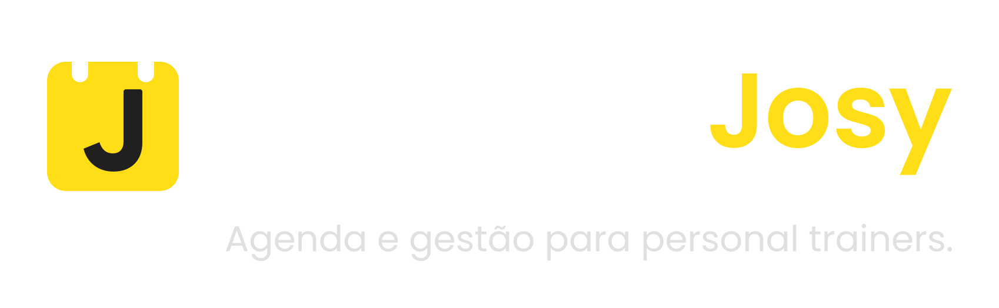

A Gestão da Sua Carreira de Personal em Outro Nível.
Diga adeus ao descontrole de horários, perdas de reposições e planilhas confusas. Tenha toda a sua consultoria física centralizada em uma ferramenta ágil, moderna e integrada ao Google Calendar.
As Dores Invisíveis na Rotina do Personal Trainer
Você se preparou para prescrever treinos e transformar vidas, não para se afogar em burocracia.
O Caos no WhatsApp
Dezenas de mensagens diárias para confirmar, alterar ou cancelar horários, consumindo momentos valiosos do seu descanso.
Conflitos e Furos de Agenda
Esquecimento de compromissos pessoais e choque de horários entre alunos por manter anotações soltas e sem sincronização com o celular.
Reposições Sem Fim
Alunos que faltam e cobram reposições meses depois, sem controle de prazo ou limite de aulas, desorganizando a grade.
Inadimplência Involuntária
Esquecer a data de vencimento da mensalidade de cada aluno, gerando atrasos nos pagamentos e constrangimento na cobrança.
Personal Josy: O Seu Hub Completo de Gestão
Desenvolvido sob medida para a dinâmica de academias, condomínios e treinos ao ar livre.
Organização Absoluta
Visualize seu dia e semana em uma linha do tempo clara, com status de presença por cores e agendamento instantâneo em dois toques.
Sincronização Nativa
Integração direta com o Google Calendar. Suas aulas no app refletem no celular e relógio inteligente, respeitando seus bloqueios pessoais.
Tecnologia Sem Barreiras
Acesse em 1 clique com sua conta Google existente. Funciona como app no Android e iOS, operando offline mesmo no subsolo da academia.
Agenda Inteligente & Google Calendar Unificados
Sua vida profissional e pessoal alinhadas sem a necessidade de consultar dois aplicativos.
Agenda Multivisão Dinâmica
- Visão Diária em Linha do Tempo: Acompanhe as aulas do dia com horários, alunos e status codificados por cores.
- Visões Semanal e Mensal: Identifique imediatamente horários vagos na grade para preenchimento rápido de novas consultorias.
- Recorrências Inteligentes: Configure a grade fixa do aluno uma única vez e o sistema projeta as aulas dos próximos ciclos.
Sincronização com Google Calendar
- Espelhamento Automático: Toda aula criada, reagendada ou cancelada é sincronizada com o seu Google Calendar.
- Alertas no Celular e Smartwatch: Receba lembretes nativos antes de cada treino para nunca se atrasar.
- Respeito a Compromissos Pessoais: Seus eventos pessoais marcados no Google evitam choque de horários na grade.
Ficha do Aluno & Fila Inteligente de Reposições
Atendimento individualizado e regras transparentes que eliminam desgastes com alunos.
Ficha Centralizada do Aluno
- Perfil Completo: Dados de contato, telefone, e-mail e data de início da consultoria em um só lugar.
- Metas e Condições de Saúde: Registre objetivos (hipertrofia, emagrecimento, reabilitação) e observações posturais.
- Botão de Ação Rápida WhatsApp: Abra a conversa com o aluno com um único toque direto da ficha.
- Histórico de Presenças: Registro detalhado de frequência para comprovar constância e valorizar seu trabalho.
Fila Inteligente de Reposições
- Créditos Automáticos: Cancelamentos com justificativa viram créditos de reposição automaticamente no perfil.
- Regras Claras de Validade: Sistema de competência que estabelece prazos para reposição, evitando cobranças de aulas antigas.
- Encaixe Ágil na Grade: Visualize créditos disponíveis e agende a reposição em janelas vagas da sua semana com facilidade.
Previsibilidade Financeira & Resiliência Offline
Monitore sua receita com precisão e conte com um aplicativo que nunca te deixa na mão.
Controle por Ciclo de Mensalidade
- Vencimento Individualizado: Cada aluno possui seu ciclo de pagamento conforme o dia de fechamento do plano.
- Status de Pagamento em Tempo Real: Identifique em segundos quem está em dia, pendente ou com mensalidade em aberto.
- Previsão de Faturamento: Tenha clareza sobre o valor a receber no mês e planeje suas finanças pessoais com tranquilidade.
PWA & Funcionamento Offline-First
- Instalável em Qualquer Aparelho: Adicione o Personal Josy na tela inicial do Android ou iPhone sem precisar de App Store.
- Funciona Sem Internet no Salão: Consulte a agenda e dê presença mesmo no subsolo ou em áreas sem sinal de operadora.
- Sincronização em Nuvem: As alterações são salvas localmente no aparelho e sincronizadas com o MongoDB ao reconectar.
A Transformação Prática: Antes vs. Depois
Veja a diferença concreta entre gerenciar no improviso e utilizar o Personal Josy.
| Processo de Gestão | Sem o Personal Josy (Improviso) | Com o Personal Josy |
|---|---|---|
| Agendamentos | ✕ Áudios e mensagens perdidas no WhatsApp | ✓ Grade visual limpa (diária, semanal e mensal) |
| Calendário Pessoal | ✕ Furos e choque de horários com a vida pessoal | ✓ Sincronização automática com Google Calendar |
| Reposição de Faltas | ✕ Alunos cobrando aulas de meses atrás sem registro | ✓ Fila inteligente com regras e prazos de validade |
| Cobrança de Mensalidades | ✕ Esquecimento de cobrar no vencimento do aluno | ✓ Ciclos claros de cobrança e status em tempo real |
| Sinal na Academia | ✕ Apps lentos que travam quando o 4G/5G oscila | ✓ PWA offline-first: funciona 100% mesmo sem internet |
Pronto para Levar Sua Consultoria ao Próximo Nível?
Junte-se a personal trainers que já simplificaram suas rotinas, reduziram o estresse com reposições e profissionalizaram o atendimento aos alunos.
🚀 Entrar com Google e Acessar Agora